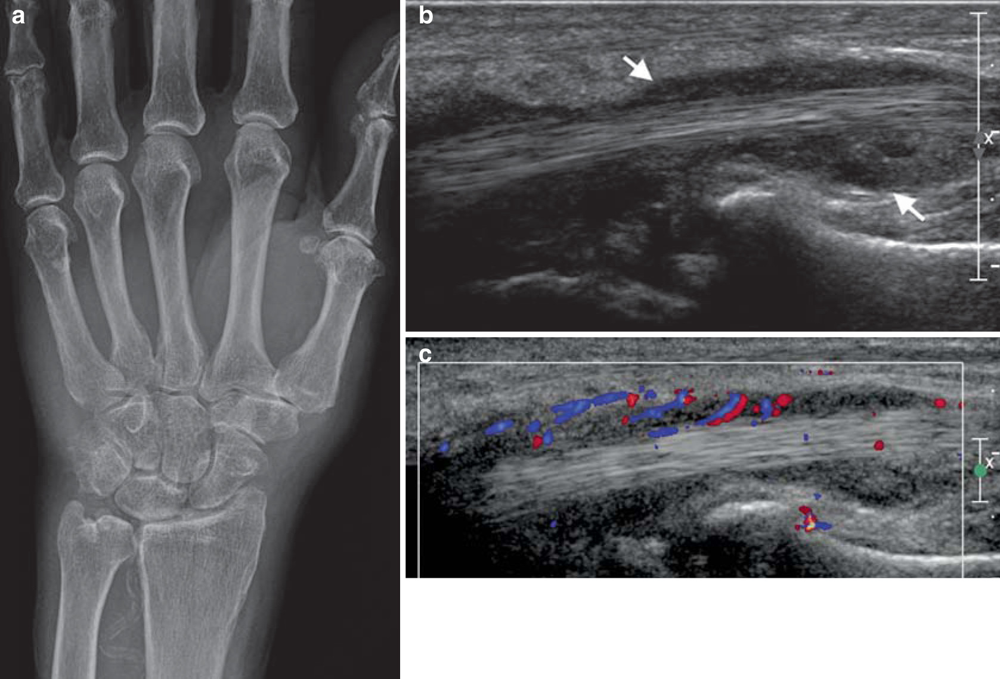
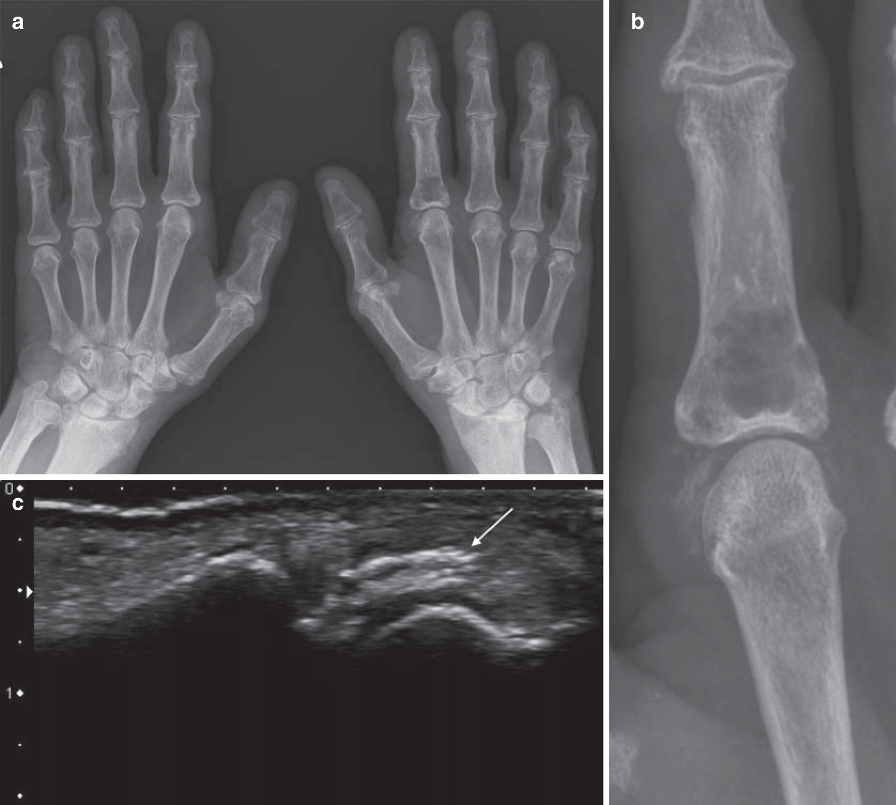
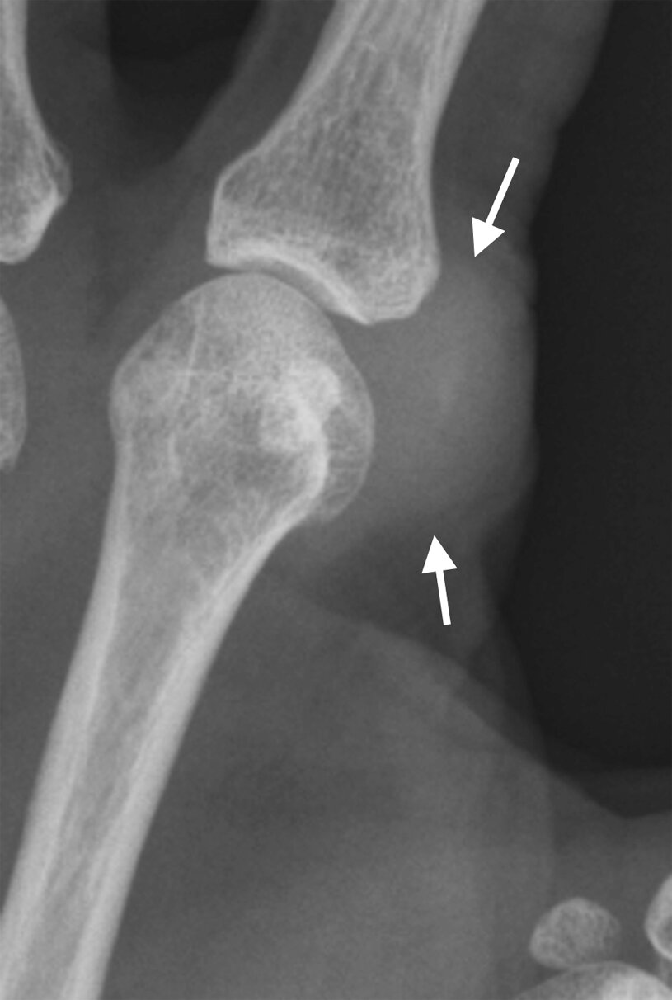
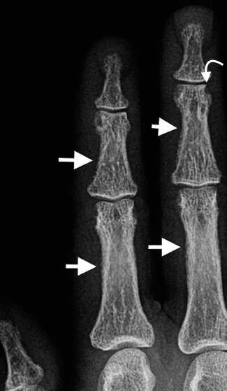
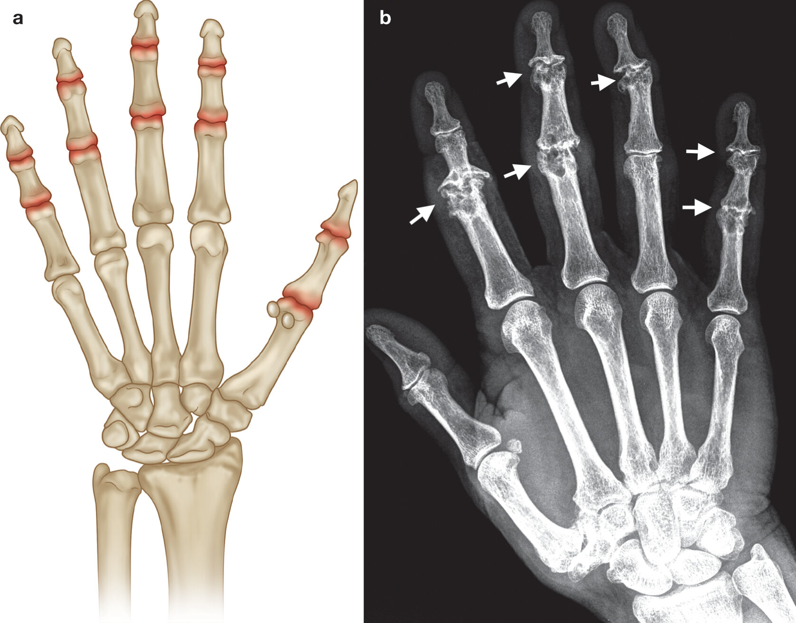
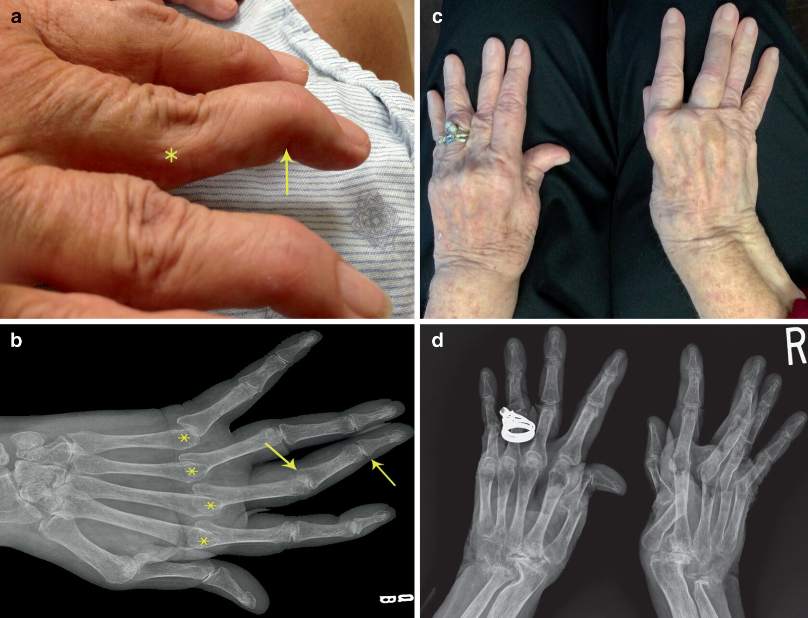
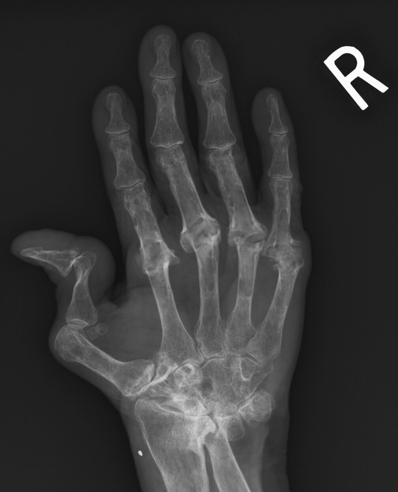

Scleroderma
- Scleroderma, also known as Systemic Sclerosis, is a multiorgan chronic connective tissue disease of unknown etiology.
- There are two main subtypes, limited and diffuse systemic sclerosis.
- Scleroderma is associated with significant morbidity and mortality due to vascular malfunction, inflammation and fibrosis.
- The CREST syndrome is a variant of scleroderma with its own acronym defined as Calcinosis, Raynaud’s, Esophageal dysmotility, Sclerodactyly and Telangiectasia.
- Musculoskeletal involvement is present in 61% of patients. Usually presents with bilateral symmetrical pain and swelling with underlying synovitis. Hand involvement common- wrists, MCPJ, PIPJ and DIPJs.
- Erosive arthropathy is present in 21% and may be associated with joint space loss and periarticular osteopenia in up to 23% of patients.
- Occaionally there can be pencil in cup deformity of the PIP and DIPJs simulating psoriatic arthritis.
- Acro-osteolysis and phalangeal tuft resorption is characteristic and is associated with digital ulcers due to compromised blood flow. This can lead to penciling and total digital destruction.
- Synovitis may be evident radiographically as periarticular swelling, as can tenosynovitis
- Flexion contractures occur in up to 27% in late stage disease
- Calcinosis cutis is common and may be focal or extensive with respect to a digit, may be associated with digital ulcers. Usually dominant hand or areas chronic stress involved
SLE
- SLE, systemic lupus erythematosus, is a multiorgan autoimmune disease arising from dysregulation in the immune system
- Joint involvement in (SLE) is one of the earliest and most common manifestations of this multi-systemic disease
- Ranges from a minor arthralgia to a severe deforming arthritis
- Lupus arthropathy is usually transient, migratory, non-erosive and reversible
- Occasionally, it may take a more chronic course, leading to non-erosive joint deformities, which in the severe form is called Jaccoud’s arthropathy
Radiographic Hallmarks
Symmetric polyarthritis form
- Seen in 75-90% of patients with varying degrees of severity
- Migratory, generally non-deforming and non-erosive
- 5-15% may develop a deforming arthropathy
- Affects small joints of the hand, as well as knees, wrists, and shoulders
Radiographic Findings NON-SPECIFIC:
- soft tissue swelling about involved joints
- periarticular osteopenia
- normal joint spaces
- Carpal instability may be seen (~15% of patients)
Rhupus syndrome
- Patients present with characteristics of Rheumatoid arthritis but later present with clinical and laboratory features of SLE
- Symmetrical polyarthropathy which can lead to debilitating deformities.
- Marginal erosions may be present, similar to rheumatoid arthritis.
- Dystrophic soft tissue calcification, synovitis and tenosynovitis may occur
Jaccoud’s Arthropathy
- Initially described in patients with rheumatic disease (rare disease).
- Now more commonly seen in SLE (prevalence approx 5%). Has also been described in other diffuse CTD, neoplasia, infections and as idiopathic in the elderly.
- Radiographically this is essentially a non erosive disease but occasionally small erosions may be identified on MRI
- Often asymptomatic
- Occurs most commonly in the hands and feet and rarely in large joints
- Synovitis may be present and is usually mild
- Lax ligaments and capsule. Eventually in longstanding disease fibrosis of the capsule may occur leading to non-reversible deformities
- Associated with tendinosis, tenosynovitis and tendon tears/rupture
- Be careful not to misdiagnose in patients with RhA
Radiographic Hallmarks
- reversible joint deformation with multiple non-erosive subluxations
- ulnar deviation
- swan neck deformities
- Z deformity of the thumb
Patient with Rhupus (above)
- Z shaped deformity thumb
- Ulnar deviation and subluxation at the 2-5 MCPJs
- Marginal erosions at multiple metacarpal heads (arrow demonstrates erosions at 2nd metacarpal head)
- Mild diffuse osteopenia
CPPD
Calcium pyrophosphate depositional disease has four subgroups:
- Asymptomatic
- Osteoarthritis with CPPD
- Acute CPP arthritis (previously pseudogout)
- Chronic CPP crystal inflammatory arthritis
Arthropathy is secondary to the deposition of calcium pyrophosphate crystals in articular and periarticular tissues including hyaline and fibrocartilage, synovium, ligaments and tendons.
- Associated with aging, osteoarthritis, trauma and metabolic diseases such as hyperparathyroidism and hemochromatosis.
- May be secondarily present in up to 30% of patients with an erosive arthritis such as rheumatoid arthritis.
Radiographic Hallmarks
- Chondrocalcinosis (although may not be evident radiographically in the symptomatic joint)
- Ligamentous calcification, most often the lunotriquetral and scapholunate ligaments on hand radiographs
- Cartilage destruction (similar to OA) with secondary joint space narrowing, subchondral sclerosis and subchondral cysts (often a prominent feature and out of proportion with respect to degenerative changes)
- Proximal joint distribution (similar to RA)
- Increased prevalence osteoarthritis
- Atpical distribution osteoarthritis should raise suspicion: radoiocarpal, triscaphe and metacarpophalangeal joints.
- Advanced - SLAC (ScaphoLunate Advanced Collapse) wrist with a “stepladder” configuration
- NO erosions
Typical Distribution
- MCP joints most commonly 2nd and 3rd
- Radiocarpal joint
- Triangular fibrocartilage
Acute CPPD Arthritis in a 65yr male with acute wrist pain and swelling 3 days after minor trauma. a) AP radiograph demonstrates diffuse soft tissue swelling, chondrocalcinosis and mild radoiocarpal degenerative disease, b) longitudinal ultrasound same patient demonstrating tenosynovitis 4th extensor compartment with increased Doppler flow (c), note hyper echoic foci with the synovium in keeping with CPP crystals and confirmed on aspiration..
Chronic CPP Arthritis in a 55-year old female a) bilateral AP radiographs with right TFC chonedrocalcinosis, bilateral radiocarpal degenerative disease, SLAC wrists and early degenerative disease of the MCPJs without erosive disease, b) magnified right 2nd MCPJ with capsular and intra-articular calcification, joint space loss and large subchondral cyst of the proximal phalanx and soft tissue swelling, c) longitudinal ultrasound image same joint as (b) demonstrating hyper echoic crystals (arrow) with the joint space.
Chronic CPP arthritis with degeneration
- Chondrocalcinosis of the triangular fibrocartilage (arrowhead)
- Radioscaphoid (arrow) and mid-carpal degeneration with joint space loss, subchondral sclerosis and large subchondral cysts in the scaphoid and capitate
- Note the lack of erosions typical of CPPD
Gout
- Gout is a chronic recurrent systemic crystal depositional disease
-
Gout has four different clinical phases:
- Asymptomatic hyperuricemia
- Acute arthritis
- Intercritical phase
- Chronic tophaceous gout
- Secondary to an inflammatory response incited by the deposition monosodium rate crystals in soft tissues, joint space and marrow
- Radiographic changes may take up to 10 years to develop after first clinical symptoms
- Initially monarticular but may progress to asymmetric polyarticular disease
- Bone density is preserved although there may be mild periarticular osteopenia in an acute attack
-
Radiographic changes can be divided into:
- Normal
- Early phase, acute gouty arthritis, radiographs often normal +/- acute soft tissue swelling
-
Intermediate phase:
- soft tissue tophi develop (often nodular and of slight increased attenuation)
- periosteum adjacent to tophi may develop a lace like appearance which may progress to an erosion.
- Classically extra-articular erosions have a punched out appearance with sclerotic margins and an overhanging edge.
- Articular erosions begin marginally and progress centrally.
- Joint space is maintained at this stage.
- Reactive new bone formation may occur with mushroom effect.
- Subchondral intra-osseous gout appear as subchondral radiolucencies
- Late phase, rare, soft tissue top calcify and become confluent, there is secondary degenerative disease, progressive tapering deformities phalangeal shafts and joint subluxation and ankylosis may rarely occur.
Typical Distribution

- Asymmetric
- Often mono-articular
- Any joints of hand and wrist can be involved
- 2nd - 5th PIP joints most common
Common sites of involvement with (a) gout and(b) CPPD arthropathy. (c) PA radiograph of the right hand in a patient with a 15-year history of gout and chronic renal failure with marginal erosions (arrows), some with overhanging edges (first IPJ), and gouty tophus (arrow- head). Note absence of periarticular osteopenia. There was asymmetrical left hand involvement (not shown). (d) PA radiograph of the right hand with chondrocalcino- sis triangular fibrocartilage (arrow), normal bone density, mild joint space loss at the MCPJs, moderate degenerative changes at the first CMC, and crystal-related prominent subchondral cysts of the scaphoid. Incidental mild osteo- arthritis, age-related, at the PIP and DIP joints in (c, d)
Magnified PA radiograph left 2nd MCPJ demonstrating periarticular soft tissue swelling (arrows) with subtle early central calcification in keeping with a gout tophus
HADD
- Hydroxyapatite crystal depositional disease (HADD) is a systemic crystal depositional disease of unknown aetiology
- Crystals are deposited into periarticular soft tissues, predominantly involving tendons but also ligaments, capsule and synovium
- Often asymptomatic monoarticular disease
- May present acutely with pain, stiffness, swelling and tenderness
- On radiographs tendon calcification usually commences as periarticular amorphous cloudily calcification. This gradually becomes more defined and denser
- Calcification may change in size and shape over time, can be reabsorbed and reappear.
- Four stages: formative, calcific, resorptive and reparative
- May incite an adjacent bursitis
- Rupture into a joint may induce enzyme release including collagenase with rapid joint destruction, rare in wrist (known as Milwaukee shoulder when affects the glenohumeral joint)
Acromegaly
- Acromegaly is a rare disorder secondary to hypersecretion of growth hormone with subsequent increase in IGF-1 (Insulin-like Growth Hormone-1)
- Presentation differs between children with unfused growth plates and adults. In the former there is excessive growth bone leading to giantism. In the latter there is also bone overgrowth but more so in bone width with related overgrowth of soft tissue, acromegaly.
- Hand radiographs demonstrate joint space widening due to cartilage overgrowth. Cartilage is not durable and predisposes the patient to premature degenerative disease
- The short bones of the hand are widened, especially the bases of the distal phalanges.
- Tufts are widened with small exostoses and overlying soft tissue thickening
- Radiographic measurements used in the diagnosis and followup-up of patients with acromegaly include the tuft width, widened joint spaces (MCPJ, PIPJ) which are both increased in acromegaly in comparison to controls. The sesamoid index (Height x Width) medial sesamoid of the thumb and the metacarpal width index have also be used but are less sensitive with increased overlap with controls.
Hemochromatosis
- Hemochromatosis, primary and secondary, is a disease of abnormal iron metabolism causing chronic iron overload and iron deposition in parenchymal organs.
- Primary hemochromatosis has autosomal recessive inheritance. Secondary hemochromatosis is rare and can be seen in frequent blood transfusions, hemolytic anemia, myelodysplasia and Friedreich’s ataxia
- Arthritic changes are seen in approximately 50% of patients.
- Destruction of joint cartilage is due to a defect in cartilage metabolism. Patients present with features of a secondary osteoarthritis
- Characteristic symmetric non-inflammatory arthritis predominantly affecting the second and third MCPJs
- Absence of inflammatory features helps differentiate it from rheumatoid arthritis
- Joint space narrowing, subchondral sclerosis, hook like osteophytes on the radial aspect second and third metacarpal heads with subchondral cysts and diffuse osteopenia are common.
- Chondrocalcinosis and changes of chronic CPPD arthropathy may be present.
- May have recurrent attacks of acute CPPD arthritis (“pseudogout”)
Typical Distribution
- MCP joints (hook-like osteophytes radial aspect metacarpal heads{*})
- Radiocarpal, distal radioulnarjoints
Osteomyelitis
- Similar predisposing factors as septic arthritis
- Radiographs may be normal early in disease (1-2 weeks)
- Soft tissue swelling is often the first sign
- Regional osteopenia progressing to mixed lucencies with areas of osteopenia and bone sclerosis.
- Note that there may be limited sclerosis or periosteal reactions in TB and fungal infections.
- Typical features include cortical destruction, erosions, endosteal scalloping, focal osteolysis and periosteal reaction
- Brodie’s abscess is a subacute to chronic osteomyelitis with single or multiple radiolucencies surrounded by ill-defined sclerosis
- Sequestra, necrotic bone, may be seen in chronic osteomyelitis as a radiodense fragment surrounded by the involucrum, a thick band of periosteal new bone. There may be drainage via a sinus tract through an opening in the involucrum called the cloaca.
Septic Arthritis
- Also known as infectious arthritis
- Invasion of joint space by various micro-organisms (most commonly bacterial) causes damage to articular cartilage and may ultimately progress to joint destruction
- Most commonly due to hematogenous seeding, can also result from direct spread (trauma, instrumentation) or contiguous spread (soft tissue abscess, osteomyelitis)
- Any joint can be affected. More common in prosthetic joints
- Increased prevalence in patients with rheumatoid arthritis, immunocompromised patients, IVDU.
Radiographic Hallmarks
- May be normal at initial presentation
- Soft tissue swelling
- Periarticular osteopenia progresses to a mixed pattern with reactive sclerosis later in the disease process
- Joint effusion with joint space widening (early)
- Uniform joint space loss (late)
- Erosions and osteolysis / destruction of subchondral bone on both sides of the joint
- Assess for accompanying osteomyelitis with cortical destruction, medullary osteolysis and periosteal reaction
- Soft tissue abscesses may develop
- Post treatment chronic sequelae include degenerative disease and joint ankylosis
Sequential images demonstrating evolution of septic arthritis in a 28y male presenting initially with soft tissue laceration on the radial aspect right index finger overlying the DIPJ. Initial X-ray (a) demonstrates soft tissue swelling without bone injury or radiopaque foreign body. (b ) 2 weeks later there is persistent soft tissue swelling, joint space is now lost with periarticular osteopenia and a pathological fracture of the distal diaphysis middle phalynx. These features are in keeping with a septic arthritis and osteomyelitis. (c) 1 week later demonstrates progressive disease with 75% subluxation at the DIPJ and a pathological fracture base of the distal phalynx
MRH
- Mulicentric reticulohistiocytosis (MRH) is a rare systemic disorder of unknown aetiology characterized by histiocyte proliferation.
- Presentation in 50% with multiple cutaneous papules associated with an erosive symmetrical polyarthritis.
- Can affect any joint but commonly the peripheral joints.
- May be highly destructive
- Interphalangeal joint involvement (hand) is typical and can lead to significant disability.
- Marked synovitis may be present
- Classic skin lesions are “coral bead” in appearance, are firm, multiple, flesh to reddish-brown coloured, non-tender, can occur anywhere but commonly on the dorsum of the hand, 1-2cm in size and are composed of an infiltrate of histiocytic multinucleate giant cells with eosinophilic ground-glass cytoplasm.
- Histiopathological findings and clinical picture are key to the diagnosis
- Can occur at any age but more common in the fourth decade, Caucasians and in females (2:1)
- In one third of cases it is associated with malignancy
Radiographs
- Well circumscribed marginal erosions (may be disproportionate to the degree of cartilage loss)
- May resemble erosions in gout (bilateral symmetrical appearance in MRH helps separate radiographically)
- Distal IPJ involvement and lack or periarticular osteopenia helps differentiate from rheumatoid arthritis
- Lack of new bone formation and periostitis helps differentiate from psoriatic arthritis
Hyperparathyroidism
- Patients with hyperparathyroidism may develop polyarthalgia, often of small joints of the hands
- A distinctive erosive arthritis may occur, typically involving the MCP and radiocarpal joints
- Erosions are not inflammatory, but result from resorption & collapse of subchondral bone
- Classic finding is subperiosteal resorption on the radial aspect of the 2nd and 3rd middle phalanges
Radiographic Hallmarks
- Erosions
- Subperiosteal resorption
- Tuft resorption and acro-osteolysis
- Synovitis, periostitis
- Osteopenia with increased susceptible to fractures
- Brown tumors (lytic lesions, tend to have a geographical appearance)
- Other possible features -chondrocalcinosis & capsular or periarticular calcification
NO joint space narrowing
Typical Distribution
Predilection for radiocarpal, inferior radioulnar, and MCP joints
*NOTE: relative sparing of PIP joints
Subperiosteal resorption radial aspect 2nd and 3rd proximal and middle phalanges (arrows), marginal erosion third middle phalanx (curved arrow) and early tuft resorption
Osteoporosis
- Osteoporosis is a systemic disorder of bone metabolism characterized by a decreased bone mineral density and deterioration in bone microarchitecture.
- There is a decline in both bone quality and quantity
- Hand radiographs in osteoporotic patients may reveal characteristic findings. There is diffuse increase in lucency with thinning of cortex and trabeculae.
- The metacarpal index is a useful tool in the assessment of osteoporosis and has been shown to be associated with risk of hip fracture.
- Assess for underlying predisposing factors etc and consider formal BMD measurement.
Renal Osteodystrophy
- Renal osteodystrophy is a heterogenous group of metabolic bone disorders that may occur in patients with chronic renal disease.
- Earliest form is related to secondary hyperparathyroidism
-
Different bone turnover states may occur
- Low bone turnover states: osteomalacia and dynamic bone disease
- High turnover states: osteitis fibrosa cystica
- Mixed turnover states: mixed uremic osteodystrophy and in post transplant bone disease
- Radiographic findings are often a combination of these different states
- Similar radiographic changes can be seen as in primary hyperparathyroidism
- Erosive disease primarily involves the MCPJs and PIPJs
- Osteomalacia
- Soft tissue calcifications (calcium hydroxyapatite deposition)
- Vascular calcification
- Insufficiency fractures
Erosive Osteoarthritis
- Erosive OA is a subset of primary osteoarthritis and is also termed inflammatory OA.
- Predominantly affects middle aged and elderly women (male to female ratio 1:12)
- Usually is of abrupt onset with pain and swelling.
- Predominantly involves the PIPJs and DIPJs
- Radiographic features include joint space loss, bony outgrowths at the joint magins and central erosions. The latter are a discriminating feature and produce the classical “sea-gull” appearance on X-ray.
- Joint ankylosis may eventually develop
- Lack of periosteal reaction, marginal erosions and new bone formation (excluding osteophytes) helps to separate the disease from psoriatic arthropathy
Distribution erosive osteoarthritis of the hand and corresponding PA radiograph
Osteoarthritis
- Osteoarthritis, OA, is also termed degenerative joint disease and is the most common arthritis.
- OA is a complex interaction of advancing age, genetic predisposition, mechanical stress, obesity as well as metabolic and biochemical factors all of which may affect the degree, extent and progression of the disease
- Two main forms exist, primary and secondary. Erosive OA is a subset of OA and is reviewed separately
-
Primary OA:
- is an age-related disease with a genetic susceptibility in some individuals to earlier onset and more rapid progression.
- It occurs in joints without predisposing factors and may be localized or generalized.
- Increases significantly in prevalence after the age of 50yrs with the majority of individuals demonstrating some form of OA after the age of 70 yrs.
-
Secondary OA:
- occurs in abnormal joints.
- Predisposing conditions include traumatic joint disease, inflammatory arthropathies, CPPD, congenitally abnormal joints, prior septic arthritis, AVN and metabolic and endocrine arthropathies.
- Patients may present with joint pain worse with use, stiffness, tenderness over involved joint, bony enlargement, soft tissue swelling and mild stiffness which worsens with immobility.
- Radiographs can confirm diagnosis and can assess the extent of disease.
- The PIPJ, DIPJs and the first CMC joint are the most commonly affected, often symmetrical in joints involved and in the severity of disease
- The characteristic features of hand osteoarthritis include the development of bony enlargement and deformity of the DIPJ and PIPJs with so-called Heberden’s and Bouchard’s nodes respectively and squaring of the first CMC joint.
- There may be mild radial or ulnar subluxation
Key radiographic features of osteoarthritis include:
- non-uniform joint space narrowing
- osteophytosis
- altered bone contour
- subchondral sclerosis and cysts
- periarticular calcification
- soft tissue swelling
Distribution

a) Common sites involvement osteoarthitis of the hand (highlighted in red)
b) PA radiograph of the right hand with early OA demonstrating joint space loss at the PIPJ and DIPJs and early subchondral cyst formation at the second and third DIPJs

Rheumatoid Arthritis
- Rheumatoid arthritis (RA) is an autoimmune erosive inflammatory arthritis of unknown aetiology.
- Blood markers suggest an autoimmune activation with high inflammatory markers and positive antibodies such as rheumatoid factor (RF) and the more specific autoantibody anti-citrullinated peptide antibodies (Anti-CCP).
- Rheumatoid factor is positive in 50-80% of patients depending on the stage of the disease. RF may be negative particularly early in the disease and is then termed seronegative Rheumatoid arthritis.
- Anti-CCP has the same sensitivity as RF but is more specific, approximately 97%
- Women are affected more commonly then men, ratio 3:1, with a peak incidence in middle age. There is a modest familial predisposition
- Characterized by synovial proliferation and inflammation with resulting soft tissue swelling, synovial neovascularisation, bone erosions, bone marrow oedema, cartilage destruction and periarticular osteopenia. These are the pathological hallmarks of the disease.
- Erosions are present in 19% of patients after 3 years and 80% after 20yrs. Erosions are clearly linked with functional disability.
- A small subset of patients are rapidly progressive and develop early erosive disease.
- Erosions may develop in patients who appear to be clinically responsive hence the need to monitor with imaging for subclinical synovitis and erosions particularly in the first two years post initial diagnosis.
- 2010 American College of Rhematology/European League Against Rheumatism (ACR/EULAR) classification criteria describe the diagnosis of definite RA based on joint involvement, inflammatory markers and serological tests.
- Any synovial joint can become involved, the small joints of the hands and feet are commonly affected.
- Diagnosis depends on a combination of factors including > 6 weeks of tender or swollen joints, a raised inflammatory response and a positive RF or anti-CCP
-
Symptom onset includes:
- pain and swelling of synovial joints
- morning stiffness lasting more than 1 hour
- fatigue
Radiographic Hallmarks
- Soft tissue swelling
- Effusions and synovial proliferation with secondary widening of the joint space
- Periarticular osteopenia
- Progresses to cartilage loss and uniform joint space narrowing
- Erosions, commencing as marginal erosions with a lack of sclerosis (active erosion) or periosteal reaction
- Joint deformities including swan-neck, boutonniere’s, Z-shaped deformities, subluxations, dislocations, deviations, finger dro , radial deviation wrist, ulnar sided translocation proximal carpal row, dorsal slip scaphoid with respect to the lunate.
- Osseous ankylosis may occur in chronic disease and is most common at the carpus
- RhA is typical a bilateral and symmetrical disease in its extent and severity
Distribution
- In the hand the second and third MCPJs and PIPJs are most commonly involved.
- In the wrist there are multiple sites of involvement including the radoiocarpal,carpal and the distal radio-ulnar joints.
Early Rheumatoid Arthritis

Early Rheumatoid Arthritis
a) PA radiograph wrist with soft tissue swelling over the ulnar styloid process (arrow), region of extensor carpi ulnaris with underlying erosion ulnar styloid, b & c) ultrasound confirming erosion (cortical defect) ulnar styloid (arrows) and overlying ECU tendinosis and tenosynovitis with marked increased flow on Doppler (b)

Deformities
a & b) Illustration classical deformities in RhA, C) Lateral hand radiograph with swan neck deformity, d) Z-shaped deformity thumb
a) Photograph of swan neck deformity with hyperextension PIPJ and flexion DIPJ, b) corresponding radiograph, c) Chronic RhA with multiple deformities including subluxation, ulnar deviation, boutonniere’s right 3rd digit and Z-shaped deformity thumb with corresponding radiograph (d).
Advanced RhA
Advanced end stage RhA ,right hand PA radiograph with extensive erosions distal radius, DRUJ and MCPJs, carpal fusion and diffuse osteopenia
End-stage RhA: Previous arthroplasties at the 2nd-5th MCPJs with failure at the 4th and 5th, Z-shaped deformity thumb, ulnar translocation carpus (ulnar deviation carpus secondary to ligamentous failure), carpal fusion and partial collapse proximal carpal row, erosion and degenerative disease DRUJ, marked diffuse osteopenia
Sarcoidosis
- Multi system non-caveating granulomatous disease of unknown aetiology with variable presentation and prognosis
- Musculoskeletal involvement in 1-13% of sarcoidosis patients with estimated average of 5%
- Bone and joint pain are common symptoms.
- Arthropathy is usually symmetric and transient
- The hands and feet are most commonly affected.
- Acute sarcoid arthritis often occurs in the context of Löfgren syndrome - triad of erythema nodosum, bilateral hilar lymphadenopathy, and arthritis / arthralgias
- Most common joint involved is the ankle, followed by the knee, wrist, and MCP joints
- In the vast majority of cases acute sarcoid arthritis is a benign, self-limited disease with minimal or no joint destruction
- However may also present with a granulomatous arthritis that induces synovitis and can have a chronic transient or relapsing course. Usually oligoarticular involving ankles, knees, PIPJs hands and wrists
- Muscular sarcoid may occur
- Classic sarcoid lesions of the small bones of the hands demonstrate a “lace-like” trabecular pattern i.e. areas with cyst-like licences of different sizes, and/or extensive bone erosions.
- Small punched out cortical lesions of the phalangeal heads are the most common
- Soft tissue swelling is often present.
- Joint spaces are typically preserved.
- Joint destruction or Jaccoud deformity, when it occurs, is secondary to persistent inflammation
- Periarticular inflammation is common e.g. tenosynovitis
- The majority of cases of sarcoid arthritis, whether acute or chronic, are oligoarthritic or polyarthritic in nature
- Less common findings include subperiosteal bone resorption, acro-osteolysis, acro-osteosclerosis and bone destruction with pathological fractures
* Note: When patients with sarcoidosis present with symmetric polyarthritis, especially small joints of the hands, clinicians should evaluate for concomitant rheumatoid arthritis.
Typical Distribution
Seronegative Arthritis
- Seronegative spondyloarthropathies comprise a diverse group of chronic inflammatory arthritides which share common clinical, genetic, and radiographic features.
- All are negative for rheumatoid factor (RF). There is a strong positive association with the HLA-B27 antigen
-
Diseases include:
- Ankylosing spondylitis
- Psoriatic arthritis
- Reactive arthritis
- Enteropathic arthropathy
- Undifferentiated spondyloarthropathy
- These entities have a propensity to involve the axial skeleton (most commonly the spine and sacroiliac joints) and also the entheses (tendon/ligament/capsule attachment sites).
- The peripheral joints may be affected to varying degrees.
* Psoriatic arthritis has a propensity to affect the peripheral joints, including the hands, and is covered in more detail in the next slide.
Psoriatic Arthritis
- Inflammatory arthropathy associated with psoriasis of the skin (or a family history of psoriasis in a first degree relative)
- May present pre/with/post skin involvement. In children arthritis commonly predates skin disease whereas the opposite occurs in adults. Approximately 20% of patients with psoriasis will develop PsA within 10yrs of skin disease.
- Characterized by synovial proliferation with neovascularisation, enthesitis and bony proliferation
-
There are five domains of psoriatic arthritis:
- Peripheral arthritis
- Axial arthritis
- Skin/nail changes
- Dactylitis
- Enthesitis
-
Multiple forms of PsA:
- Asymmetric oligoarthritis (less/= 5 joints) occurs in approx. 50%
- Classic PsA - distal digits (DIPJs) + fingernail involvement, approx 40%
- Arthritis Mutilans - advanced destructive form with severe erosive change and bone resorption -rare
- Symmetric seronegative polyarthritis simulating RA, up to 30%
- Spondyloarthritis (sacroiliitis and spondylitis), resembling Ankylosing Spondylitis, with large joint involvement, up to 30%
Radiographic Hallmarks
- Erosions
-
New bone formation
- Enthesitis - new bone formation at capsule, ligament or tendon osseous insertions.
- Periostitis, bone formation - “fluffy” new bone, along shaft and adjacent to erosions
- Ankylosis of joint
- Deformities: subluxations, ankylosis
- Marked soft tissue swelling which may affect the whole digit, Dactylitis- “sausage digit”
- Resorption of distal tufts
- DIPJ involvement with ankylosis
- Lack of periarticular osteopenia
- Highlighted -helpful in differentiating from rheumatoid arthritis in those with a RhA like presentation

{kind=link}
{kind=link}
{kind=link}
{kind=link}
{kind=link}
{kind=link}
{kind=link}
{kind=link}
{kind=link}
{kind=link}
{kind=link}
{kind=link}
{kind=link}
{kind=link}
{kind=link}
{kind=link}
{kind=link}
{kind=link}
{kind=link}
{kind=link}
{kind=link}
{kind=link}
{kind=link}
{kind=link}
{kind=link}
{kind=link}
{kind=link}
{kind=link}
{kind=link}
{kind=link}
{kind=link}
{kind=link}
{kind=link}
{kind=link}
{kind=link}
{kind=link}
{kind=link}
{kind=link}
{kind=link}
{kind=link}
{kind=link}
{kind=link}
{kind=link}
{kind=link}
{kind=link}
{kind=link}
{kind=link}
{kind=link}
{kind=link}
{kind=link}
{kind=link}
{kind=link}
{kind=link}
{kind=link}
{kind=link}
{kind=link}